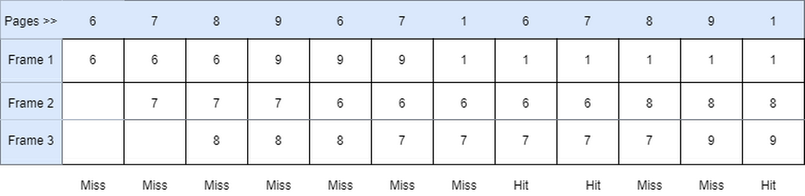

Advantages
- It is a low-overhead algorithm
- Implementation is simple and easy
Disdvantages
- Instead of using the frequency of the last used time, this technique simply replaces the Oldest Page.
- Increase in the number of page faults as page frames increase (Belady's anomaly).
Examples
Consider the Pages referenced by the CPU in the order are 6, 7, 8, 9, 6, 7, 1, 6, 7, 8, 9, 1

- As in the above figure shown, let there are 3 frames in the memory.
- Initially, since all the slots are empty, page 3,1,2 causes a page fault and takes the empty slots.
- When page 1 comes, it is in the memory and no page fault occurs.
- When page 6 comes, the page fault occurs, and page 2 is removed as it is on the top of the stack and is the newest page.
- When page 5 comes, it is not in the memory, which causes a page fault, and hence page 6 is removed being on top of the stack.
- When page 1 and page 3 come, they are in memory already, hence no page fault occurs.
Number of Page Faults = 5